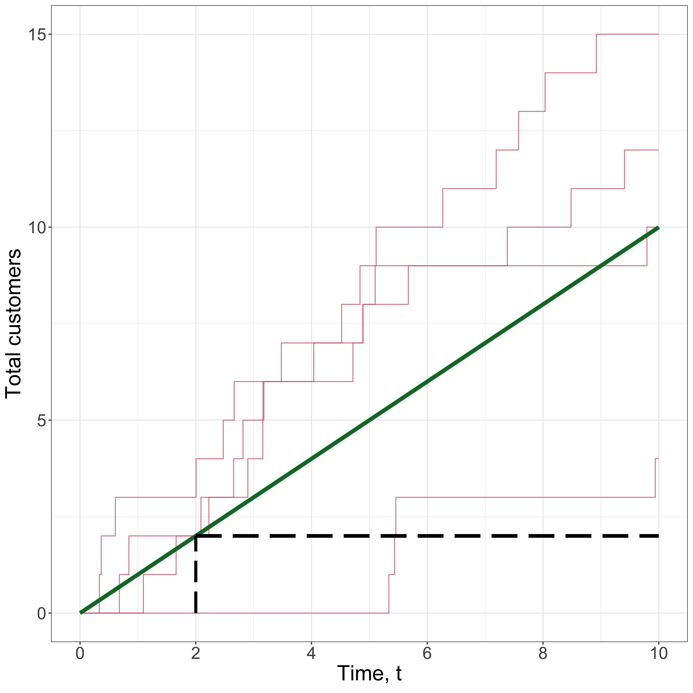
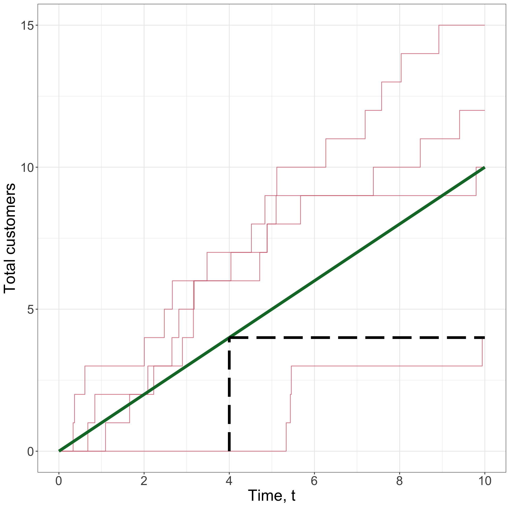
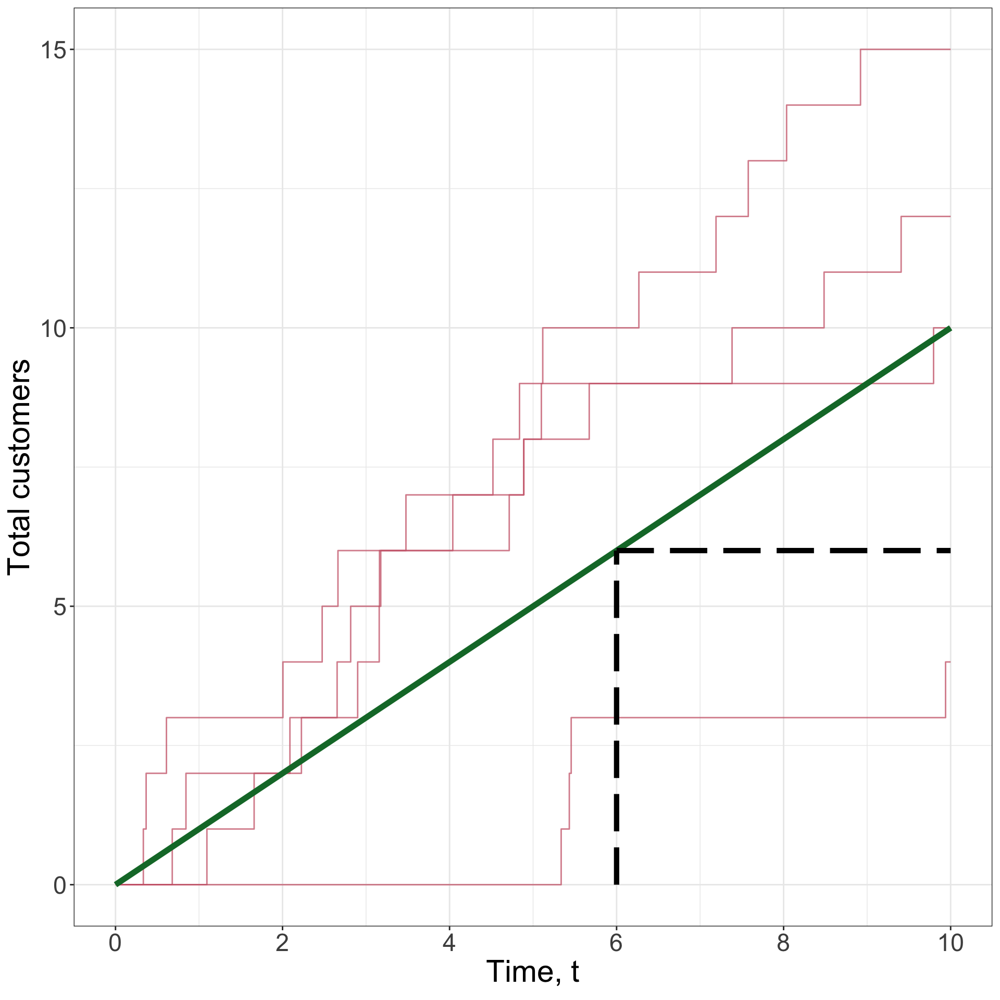
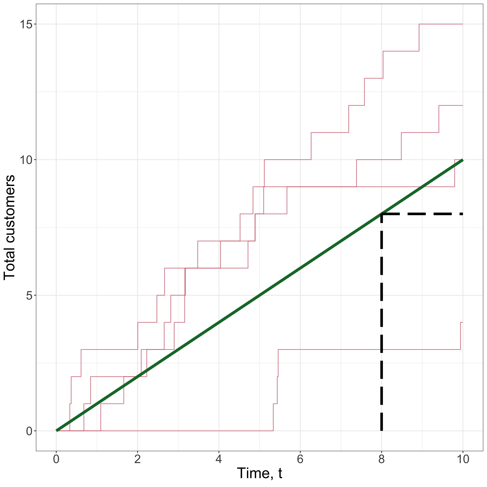

Counting in continuous time
Motivating example
Poisson Process
Recap and more
Imagine you run a small coffee shop on Rundle Mall.
Frequency of customer arrivals determines staffing.
Coffee Shop Questions
Coffee Shop Q1
What is the probability of exceeding 20 customers during the first hour after opening?
Definition: Poisson distribution
The random variable X \in \mathbb{N}_0 is called a Poisson random variable with rate \lambda > 0 if
\mathbb{P}(X = k) = p_\lambda(k) =\frac{\lambda^{k}e^{-\lambda}}{k!}, \quad k \in \mathbb{N}_0.
We also say X \sim \mathcal{P}(\lambda) for short.
Definition: Poisson process
The counting process \{N(t), t \in [0,\infty)\} is called a Poisson Process with rate \lambda > 0 if
Process realisation 1
Process realisation 2
Process realisation 3
Process realisation 4
Process mean and realisations

Distribution at time t



Arrival time
T_i = Time of ith arrival, for i \in \{1,2,\ldots\}
Interarrival time
X_{i} = Time between (i-1)th and ith arrival, for i \in \{1,2,\ldots\}
X_{i} = T_{i} - T_{i-1}, T_0=0
Property 1
For fixed t, N(t) \sim \text{Pois}(\lambda t)
Property 2
\mathbb{P}(N(s_2 + t_2)-N(s_2) = k_2 \mid N(s_1 + t_1)-N(s_1) = k_1) = p_{\lambda t_2}(k_2)
for s_1 < s_1 + t_1 \leq s_2 < s_2 + t_2, t_1,t_2>0 and k_1,k_2 \in \mathbb{N}_0.
Property 3
The interarrival times X_i \sim \text{Exp}(\lambda), for i \in \{1,2,\ldots\}
State which elements of the Poisson Process definition are required for each property:
Property 1
For fixed t, N(t) \sim \text{Pois}(\lambda t).
State which elements of the Poisson Process definition are required for each property:
Property 2
\mathbb{P}(N(s_2 + t_2)-N(s_2) = k_2 \mid N(s_1 + t_1)-N(s_1) = k_1) = p_{\lambda t_2}(k_2)
for 0\leq s_1 < s_1 + t_1 \leq s_2 < s_2 + t_2, and k_1,k_2 \in \mathbb{N}_0.
Exponential distribution property
Law of total probability
Property 3
The interarrival times X_i \sim \text{Exp}(\lambda), for i \in \{1,2,\ldots\}
For times s,t > 0 and arrival index i \in \{1,2,\ldots\} consider
\mathbb{P}(X_{i} > t \mid T_{i-1} = s)
\mathbb{P}(X_{i} > t \mid T_{i-1} = s)
= \mathbb{P}(T_{i} - T_{i-1} > t \mid T_{i-1} = s)
= \mathbb{P}(T_{i} > s+t \mid T_{i-1} = s)
= \mathbb{P}(N(s+t) - N(s) = 0 \mid N(s) - N(0) = i-1)
= p_{\lambda t}(0) = e^{-\lambda t}
Now consider \mathbb{P}(X_{i} > t)
= \mathbb{E}[\mathbb{P}(X_{i} > t \mid T_{i-1}=S)]
= \mathbb{E}[e^{-\lambda t}] = e^{-\lambda t}
We can then recognise that X_i \sim \text{Exp}(\lambda).
«La vie n’est bonne qu’à deux choses: à faire des mathématiques et à les professer»
“Life is only good for two things: doing mathematics and teaching it”
Poisson did not use or discover the Poisson process!
Delays and congestion in telephone systems (1909)
Number of \alpha-particles detected by Geiger count (1910)
Adopted quickly in: biology, ecology, engineering, physics